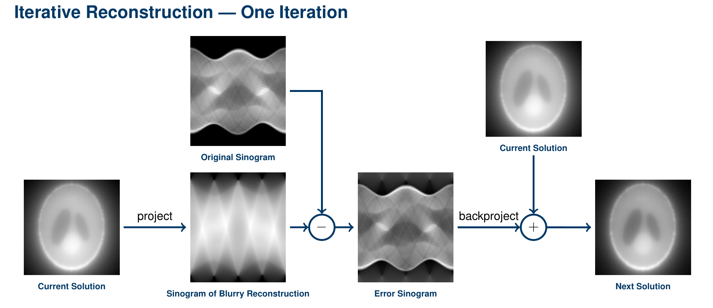

Iterative Reconstruction
Using backprojection, we could achieve a blurry reconstruction result. The Filtered Backprojection algorithm solves this problem by applying a filtering step before backprojection. For the project work, we will take a different approach.
In the last section, you measured the error between your reconstruction and the ground truth volume.
However, this is only possible when doing a simulation and not when reconstructing an unknown real object.
What we can do instead is meassuring the error in the projection domain by simply projecting the reconstruction!
Implement the following method to use with our reconstructionProjector:
// In mt/Projector.java
public void reconstructIteratively(Image meassuredProjection, int sliceIdx, int numIterations)
It should
- call
projectSliceonvolumeto obtain a projection of our reconstruction - calculate an error image subtracting
singogram.getSlice(sliceIdx)frommeassuredProjection - replace the current slice of
singogramby our error image - call
backprojectSlicewith the currentsliceIdx - repeat all this for
numIterationsiterations

So we're now doing an reconstruction of the error sinogram and adding it to our blurry image. Does this reduce our error?
Our reconstruction algorithm is now finished. But it operates only on 2-d slices.
Create 3-d versions of projectSlice, backprojectSlice and reconstructIteratively:
public void project()
public void backproject()
public void reconstructIteratively(Volume measuredProjections, int numIterations)
All they should do is calling their 2-d version for each slice. You should now be able to reconstruct volumes.
Hint: You can use the following construct instead of a for-loop to enable multi-threaded calculation.
// You have to replace `var` by `java.util.concurrent.atomic.AtomicInteger` when using Java 1.8
var progress = new java.util.concurrent.atomic.AtomicInteger(0);
IntStream.range(0, sinogram.depth()).parallel().forEach(z -> {
System.out.println("Progess: " + (int) (progress.incrementAndGet() * 100.0 / (double) sinogram.depth()) + " %");
//Do stuff here for slice z
...
});
Project Report
For the project, describe how your iterative reconstruction algorithm works. You should not mention implementation details like variable or function names. Compare it with the Filtered Backprojection algorithm! It's not necessary to explain Filtered Backprojection Algorithm in detail. Just highlight the main difference.
Test your reconstruction algorithm on a slice of a CT reconstruction of the Cancer Imaging Archive.
Measure the error of the reconstructed slices after each iteration (so call reconstructIteratively with numIterations == 1).
Include a figure showing this error in dependence of the iteration number in the project report.
Include images comparing ground truth, the backprojected slice and the result after a few iterations.
Comment on the error and the images in your text. Does the result of the iterative reconstruction look better than solely using backprojection?
This part of the project report should be no longer than 1.5 pages.
Conclusion
In the last part, summarize want you have implemented and explained in your project report. Review the shortcommings of your simplified approach and how they could be mitigated in future. Draw a conclusion on your work!
This part of the project work should be about a quarter page long and should contain no images.
Submission
Submit your project report as a PDF and your entire project folder of your code until August 16 23:55h. Your project must compile as a whole! Make sure that you had a last look at our checklist.
Evaluation
We hope you had a fun project work! You can help us to improve the instructions for next year!